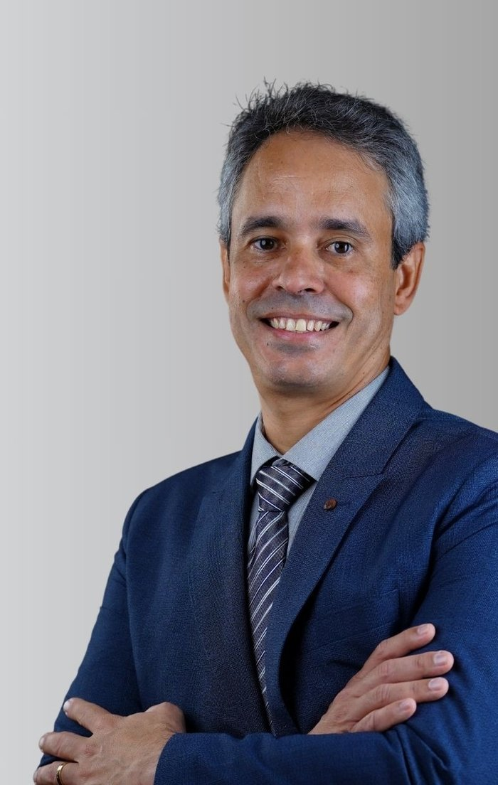

Início · Dr. André
André Leal Gonçalves Torres: formação e trajetória.
Cirurgião plástico (CRM-BA 14640 · RQE 8035), doutor em Cirurgia Plástica pela Faculdade de Medicina da USP e cirurgião plástico do Hospital Universitário Professor Edgard Santos, onde é preceptor da residência. Cada informação desta página tem a fonte ao lado.
Doutorado
Doutor em Cirurgia Plástica pela USP
Em 2011, o Dr. André defendeu a tese de doutorado no Programa de Cirurgia Plástica da Faculdade de Medicina da Universidade de São Paulo, para o título de Doutor em Ciências, com orientação do Prof. Dr. Marcus Castro Ferreira.
A tese, “Estudo da anatomia do nervo tibial e seus ramos ao nível do terço distal da perna”, é um estudo anatômico, feito por dissecção, dos ramos do nervo tibial na parte de baixo e de dentro da perna, perto do tornozelo: a região do túnel do tarso, onde esse nervo pode ser comprimido.
Sumário da tese (trecho)PDF · repositório da USP
- 1Introdução10
- 1.1Neuropatia diabética10
- 1.2Tratamento cirúrgico da compressão no túnel do tarso13
- 1.3Anatomia topográfica e descritiva do terço distal medial da perna14
- 2Objetivo19
- 3Material e método20
- 4Resultados27
- 5Discussão42
- 6Conclusões52
Em 2012, o estudo foi publicado na Acta Ortopédica Brasileira, com o orientador: “Study of the anatomy of the tibial nerve and its branches in the distal medial leg” (vol. 20, nº 3, p. 157–164). Ler no PubMed Central · registro na BDTD.
Hospital universitário
HUPES-UFBA e residência
O Dr. André é cirurgião plástico do Hospital Universitário Professor Edgard Santos (HUPES), o hospital universitário da UFBA, com vínculo de empregado público registrado no CNES desde outubro de 2015. Em 2014, foi aprovado no concurso da Ebserh para o cargo de médico cirurgião plástico do hospital.
No perfil da Sociedade Brasileira de Cirurgia Plástica, a formação dele começa por: “Preceptor da Residência em Cirurgia Plástica da UFBA-HUPES”. Em 2025, orientou um trabalho de conclusão da residência sobre o impacto das redes sociais na percepção dos pacientes de cirurgia plástica (repositório da UFBA).

Cirurgia reparadora
Hospital Aristides Maltez (2014–2022)
Segundo o CNES, o Dr. André foi cirurgião plástico do Hospital Aristides Maltez, da Liga Baiana Contra o Câncer, de janeiro de 2014 a março de 2022.
Na apresentação que publica, ele se descreve como “ex-coordenador (2014 a 2021) do grupo de Cirurgia Plástica Reparadora do Hospital Aristides Maltez (HAM) / Liga Baiana Contra o Câncer (LBCC), com ênfase na Microcirurgia Reconstrutiva.” Veja a página de reconstrução mamária e microcirurgia.
Dr. André Leal, na apresentação publicada no site dele (cópia de outubro de 2024 no Internet Archive).
Sociedades
Sociedades, CREMEB e NTCO
SBCP
Membro titular da Sociedade Brasileira de Cirurgia Plástica, com CRM 14640 e RQE 8035-BA, segundo a busca pública da sociedade.
CREMEB
Integrante da Câmara Técnica de Cirurgia Plástica do Conselho Regional de Medicina do Estado da Bahia.
SBCM
Membro da Sociedade Brasileira de Cirurgia da Mão (matrícula 469), segundo o localizador público da sociedade.
NTCO
Integrante da equipe multidisciplinar do Núcleo de Tratamento e Cirurgia da Obesidade, em Salvador.
Na apresentação dele, o Dr. André cita também: “Membro sócio da Associação de Cirurgia de Mão da Bahia”, e se descreve como “Médico Preceptor do Serviço de Cirurgia Plástica da Faculdade de Medicina da UFBA, responsável pelo Grupo de Cirurgia Plástica Pós-Bariátrica e Cirurgia da Mão.”
Currículo
A formação, como ele a publicou
No currículo publicado no site dele em 2019 (cópia no Internet Archive), o Dr. André lista esta formação. São dados declarados por ele; o doutorado tem também a fonte oficial da USP.
- 1995–2000Graduação em Medicina, Universidade Federal da Bahia (UFBA).
- 2001–2003Residência médica em cirurgia geral, Hospital Santo Antônio (HSA).
- 2003–2006Residência médica em cirurgia plástica, UFBA.
- 2006–2008Residência médica em cirurgia da mão, Universidade de São Paulo (USP).
- 2008–2011Doutorado em Cirurgia Plástica, USP.
“[…] acredito que a cirurgia plástica não é motivo de capricho ou vaidade, mas uma busca constante por um estado de bem-estar físico, mental e social.”Dr. André Leal, na página inicial do site dele em 2018 (cópia no Internet Archive)

Transparência
Como conferir
- Registro e categoria de membro: busca “Encontre um cirurgião”, da SBCP.
- Tese de doutorado: PDF no repositório de teses da USP e registro na BDTD.
- Artigo de 2012: Acta Ortopédica Brasileira, no PubMed Central.
- Vínculos com o HUPES e com o Hospital Aristides Maltez: consulta de profissionais do CNES.
- Concurso de 2014: resultado final da Ebserh para o HUPES (IADES, PDF).
- Orientação na residência: repositório institucional da UFBA.
- Câmara Técnica de Cirurgia Plástica: página do CREMEB.
- Sociedade Brasileira de Cirurgia da Mão: localizador de profissionais.
- Equipe multidisciplinar: site do NTCO.
- Registro médico: busca de médicos do CFM.
Dúvidas frequentes
Perguntas comuns
O Dr. André é doutor?
Sim: doutor em Cirurgia Plástica pela Faculdade de Medicina da USP, com tese defendida em 2011 (título de Doutor em Ciências, Programa de Cirurgia Plástica).
Onde ele trabalha no serviço público?
É cirurgião plástico do Hospital Universitário Professor Edgard Santos (HUPES-UFBA), onde é preceptor da residência de cirurgia plástica.
Qual é o registro dele?
CRM-BA 14640 · RQE 8035, de cirurgia plástica, conferidos na busca pública da SBCP.
Agende
Uma conversa com o Dr. André, no Candeal.
Atendimento com hora marcada no Empresarial Cidade Jardim, Rua Leonor Calmon, 44. Fale com a equipe pelo WhatsApp (71) 98605-7785 e confirme dias e horários.